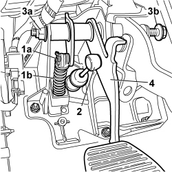

3330B27 CLUTCH PEDAL - R R FOR RHD VERSIONS
- Path
- Procedures > 33 BRAKING SYSTEM > 3330 HYDRAULIC BRAKING SYSTEM > 3330B PEDAL UNIT > 3330B27 CLUTCH PEDAL - R R FOR RHD VERSIONS
- Kind
- repair procedure (removal / refitting; the operation number is the code)
- Applies to
- engines: 1.2 8v; all production periods; only with equipment: Right hand drive
- Interactive page
- https://sloeber94.github.io/elrnDB-fPnd/en/#/169002211
Applies to: engines: 1.2 8v; all production periods; only with equipment: Right hand drive
 Removing
Removing
 Refitting
Refitting1. Working from inside the vehicle, remove clip (1a) and release clutch pedal return spring (1b).
2. Disconnect the master cylinder push rod from the clutch pedal.
3. Unscrew nut (3a), unscrew pedal retaining pin (3b) and withdraw to release the clutch pedal.
4. Remove the clutch pedal.

Applies to: engines: 1.2 8v; all production periods; only with equipment: Right hand drive
Refitting
RemovingPosition the clutch pedal on the pedal unit.
Fit the pedal retaining pin and tighten the nut.
Fit the return spring on the pedal and lock by means of the retaining spring.
Connect the clutch master cylinder pushrod to the retaining device on the clutch pedal.